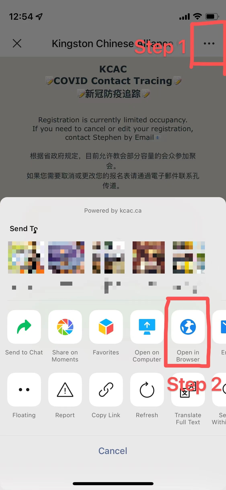

WeChat browser not supported
本页面不支持从微信浏览器中打开
Please click the three dot on top right and select ‘open in browser’
请点击右上角三个点，选择‘浏览器打开’
(Shown in the picture below 如下图所示)

Alternatively, please copy this link below to your phone browser.
或者请复制下列网页并使用手机浏览器打开。
kcac.ca